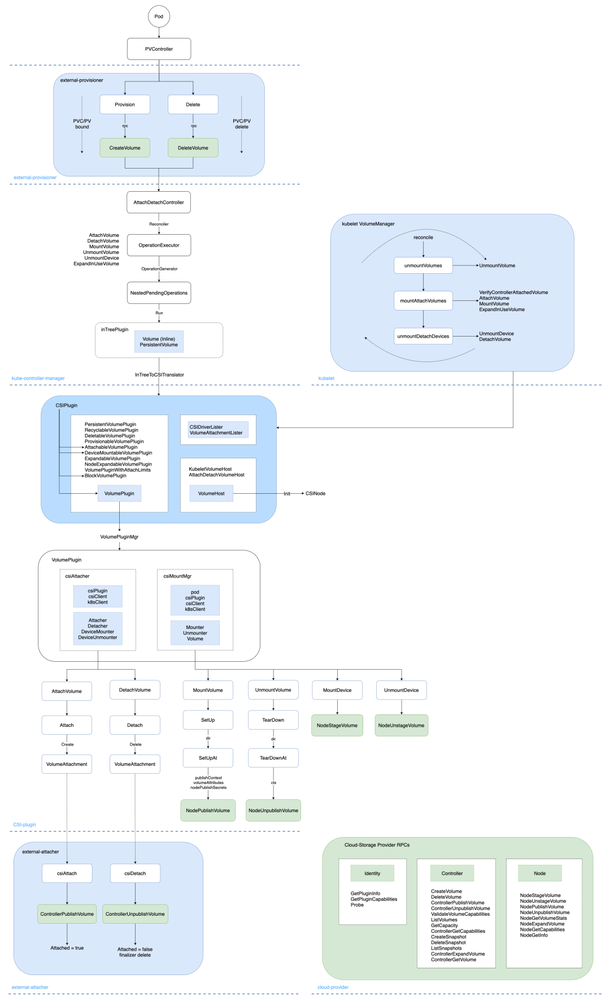
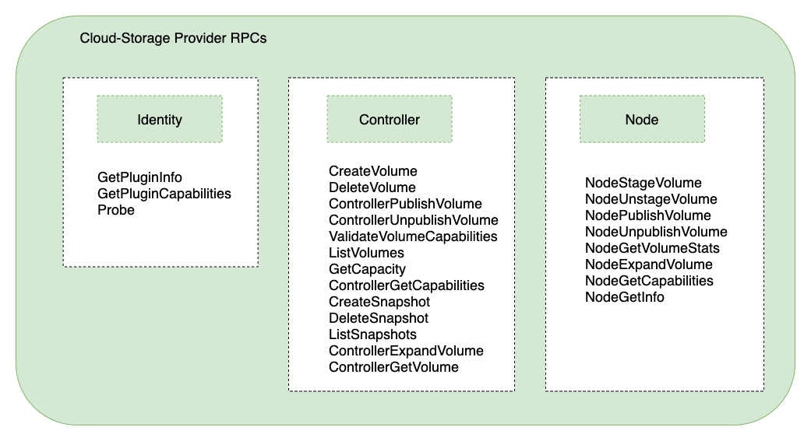
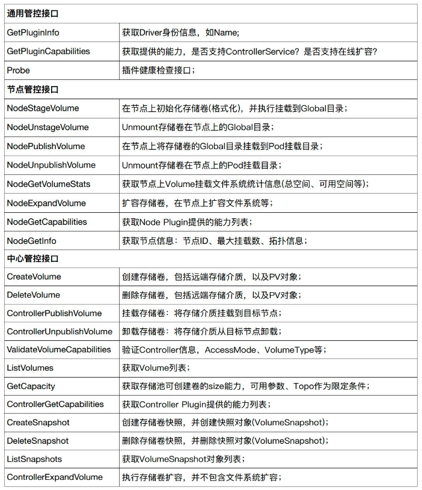
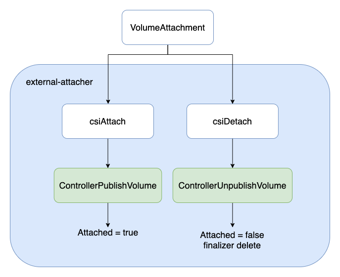
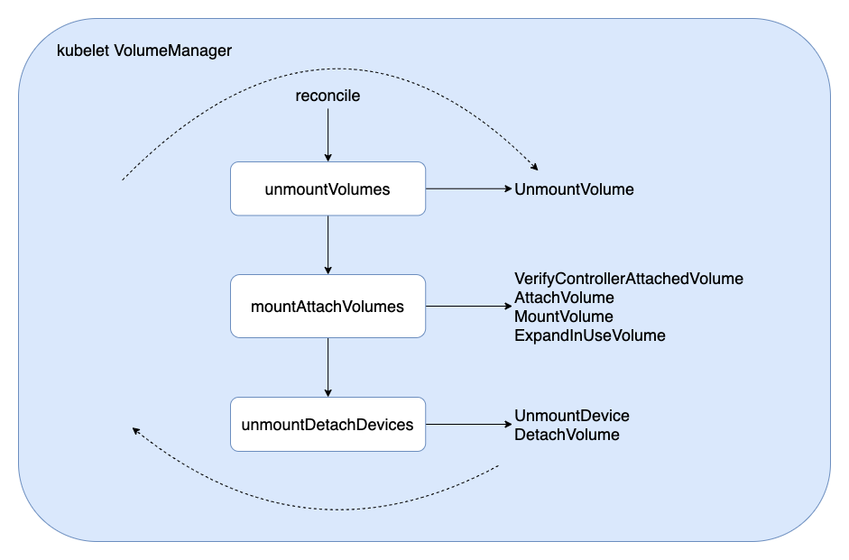

CSI浅析
1. 概述
进入 K8s 的世界，会发现有很多方便扩展的 Interface，包括 CSI, CNI, CRI 等，将这些接口抽象出来，是为了更好的提供开放、扩展、规范等能力。
K8s 持久化存储经历了从 in-tree Volume 到 CSI Plugin(out-of-tree) 的迁移，一方面是为了将 K8s 核心主干代码与 Volume 相关代码解耦，便于更好的维护；另一方面则是为了方便各大云厂商实现统一的接口，提供个性化的云存储能力，以期达到云存储生态圈的开放共赢。
本文将从持久卷 PV 的 创建(Create)、附着(Attach)、分离(Detach)、挂载(Mount)、卸载(Unmount)、删除(Delete) 等核心生命周期，对 CSI 实现机制进行了解析。
1.1 相关术语
| Term | Definition |
|---|---|
| CSI | Container Storage Interface. |
| CNI | Container Network Interface. |
| CRI | Container Runtime Interface. |
| PV | Persistent Volume. |
| PVC | Persistent Volume Claim. |
| StorageClass | Defined by provisioner(i.e. Storage Provider), to assemble Volume parameters as a resource object. |
| Volume | A unit of storage that will be made available inside of a CO-managed container, via the CSI. |
| Block Volume | A volume that will appear as a block device inside the container. |
| Mounted Volume | A volume that will be mounted using the specified file system and appear as a directory inside the container. |
| CO | Container Orchestration system, communicates with Plugins using CSI service RPCs. |
| SP | Storage Provider, the vendor of a CSI plugin implementation. |
| RPC | Remote Procedure Call. |
| Node | A host where the user workload will be running, uniquely identifiable from the perspective of a Plugin by a node ID. |
| Plugin | Aka “plugin implementation”, a gRPC endpoint that implements the CSI Services. |
| Plugin Supervisor | Process that governs the lifecycle of a Plugin, MAY be the CO. |
| Workload | The atomic unit of "work" scheduled by a CO. This MAY be a container or a collection of containers. |
本文及后续相关文章都基于 K8s v1.22
1.2 流程概览
PV 创建核心流程:
apiserver创建 Pod，根据PodSpec.Volumes创建 Volume；PVController监听到 PV informer，添加相关 Annotation(如 pv.kubernetes.io/provisioned-by)，调谐实现 PVC/PV 的绑定(Bound)；- 判断
StorageClass.volumeBindingMode：WaitForFirstConsumer则等待 Pod 调度到 Node 成功后再进行 PV 创建，Immediate则立即调用 PV 创建逻辑，无需等待 Pod 调度； external-provisioner监听到 PV informer, 调用 RPC-CreateVolume 创建 Volume；AttachDetachController将已经绑定(Bound) 成功的 PVC/PV，经过 InTreeToCSITranslator 转换器，由 CSIPlugin 内部逻辑实现VolumeAttachment资源类型的创建；external-attacher监听到 VolumeAttachment informer，调用 RPC-ControllerPublishVolume 实现 AttachVolume；kubeletreconcile 持续调谐：通过判断controllerAttachDetachEnabled || PluginIsAttachable及当前 Volume 状态进行 AttachVolume/MountVolume，最终实现将 Volume 挂载到 Pod 指定目录中，供 Container 使用；

2. 从 CSI 说起
CSI(Container Storage Interface) 是由来自 Kubernetes、Mesos、Docker 等社区 member 联合制定的一个行业标准接口规范(https://github.com/container-storage-interface/spec)，旨在将任意存储系统暴露给容器化应用程序。
CSI 规范定义了存储提供商实现 CSI 兼容的 Volume Plugin 的最小操作集和部署建议。CSI 规范的主要焦点是声明 Volume Plugin 必须实现的接口。
先看一下 Volume 的生命周期：
CreateVolume +------------+ DeleteVolume
+------------->| CREATED +--------------+
| +---+----^---+ |
| Controller | | Controller v
+++ Publish | | Unpublish +++
|X| Volume | | Volume | |
+-+ +---v----+---+ +-+
| NODE_READY |
+---+----^---+
Node | | Node
Stage | | Unstage
Volume | | Volume
+---v----+---+
| VOL_READY |
+---+----^---+
Node | | Node
Publish | | Unpublish
Volume | | Volume
+---v----+---+
| PUBLISHED |
+------------+
The lifecycle of a dynamically provisioned volume, from
creation to destruction, when the Node Plugin advertises the
STAGE_UNSTAGE_VOLUME capability.
从 Volume 生命周期可以看到，一块持久卷要达到 Pod 可使用状态，需要经历以下阶段：
CreateVolume -> ControllerPublishVolume -> NodeStageVolume -> NodePublishVolume
而当删除 Volume 的时候，会经过如下反向阶段：
NodeUnpublishVolume -> NodeUnstageVolume -> ControllerUnpublishVolume -> DeleteVolume
上面流程的每个步骤，其实就对应了 CSI 提供的标准接口，云存储厂商只需要按标准接口实现自己的云存储插件，即可与 K8s 底层编排系统无缝衔接起来，提供多样化的云存储、备份、快照(snapshot)等能力。
3. 多组件协同
为实现具有高扩展性、out-of-tree 的持久卷管理能力，在 K8s CSI 实现中，相关协同的组件有：

3.1 组件介绍
- kube-controller-manager：K8s 资源控制器，主要通过 PVController, AttachDetach 实现持久卷的绑定(Bound)/解绑(Unbound)、附着(Attach)/分离(Detach)；
- CSI-plugin：K8s 独立拆分出来，实现 CSI 标准规范接口的逻辑控制与调用，是整个 CSI 控制逻辑的核心枢纽；
- node-driver-registrar：是一个由官方 K8s sig 小组维护的辅助容器(sidecar)，它使用 kubelet 插件注册机制向 kubelet 注册插件，需要请求 CSI 插件的 Identity 服务来获取插件信息；
- external-provisioner：是一个由官方 K8s sig 小组维护的辅助容器(sidecar)，主要功能是实现持久卷的创建(Create)、删除(Delete)；
- external-attacher：是一个由官方 K8s sig 小组维护的辅助容器(sidecar)，主要功能是实现持久卷的附着(Attach)、分离(Detach)；
- external-snapshotter：是一个由官方 K8s sig 小组维护的辅助容器(sidecar)，主要功能是实现持久卷的快照(VolumeSnapshot)、备份恢复等能力；
- external-resizer：是一个由官方 K8s sig 小组维护的辅助容器(sidecar)，主要功能是实现持久卷的弹性扩缩容，需要云厂商插件提供相应的能力；
- kubelet：K8s 中运行在每个 Node 上的控制枢纽，主要功能是调谐节点上 Pod 与 Volume 的附着、挂载、监控探测上报等；
- cloud-storage-provider：由各大云存储厂商基于 CSI 标准接口实现的插件，包括 Identity 身份服务、Controller 控制器服务、Node 节点服务；
3.2 组件通信
由于 CSI plugin 的代码在 K8s 中被认为是不可信的，因此 CSI Controller Server 和 External CSI SideCar、CSI Node Server 和 Kubelet 通过 Unix Socket 来通信，与云存储厂商提供的 Storage Service 通过 gRPC(HTTP/2) 通信：

4. RPC 调用
从 CSI 标准规范可以看到，云存储厂商想要无缝接入 K8s 容器编排系统，需要按规范实现相关接口，相关接口主要为： 
- Identity 身份服务：Node Plugin 和 Controller Plugin 都必须实现这些 RPC 集，协调 K8s 与 CSI 的版本信息，负责对外暴露这个插件的信息。
- Controller 控制器服务：Controller Plugin 必须实现这些 RPC 集，创建以及管理 Volume，对应 K8s 中 attach/detach volume 操作。
- Node 节点服务：Node Plugin 必须实现这些 RPC 集，将 Volume 存储卷挂载到指定目录中，对应 K8s 中的 mount/unmount volume 操作。
相关 RPC 接口功能如下：

5. 创建/删除 PV
K8s 中持久卷 PV 的创建(Create)与删除(Delete)，由 external-provisioner 组件实现，相关工程代码在： https://github.com/kubernetes-csi/external-provisioner
首先，通过标准的 cmd 方式获取命令行参数，执行 newController -> Run() 逻辑，相关代码如下：
// external-provisioner/cmd/csi-provisioner/csi-provisioner.go
main() {
...
// 初始化控制器，实现 Volume 创建/删除接口
csiProvisioner := ctrl.NewCSIProvisioner(
clientset,
*operationTimeout,
identity,
*volumeNamePrefix,
*volumeNameUUIDLength,
grpcClient,
snapClient,
provisionerName,
pluginCapabilities,
controllerCapabilities,
...
)
...
// 真正的 ProvisionController，包装了上面的 CSIProvisioner
provisionController = controller.NewProvisionController(
clientset,
provisionerName,
csiProvisioner,
provisionerOptions...,
)
...
run := func(ctx context.Context) {
...
// Run 运行起来
provisionController.Run(ctx)
}
}
接着，调用 PV 创建/删除流程：
PV 创建：runClaimWorker -> syncClaimHandler -> syncClaim -> provisionClaimOperation -> Provision -> CreateVolume
PV 删除：runVolumeWorker -> syncVolumeHandler -> syncVolume -> deleteVolumeOperation -> Delete -> DeleteVolume

由 sigs.k8s.io/sig-storage-lib-external-provisioner 抽象了相关接口：
// 通过 vendor 方式引入 sigs.k8s.io/sig-storage-lib-external-provisioner
// external-provisioner/vendor/sigs.k8s.io/sig-storage-lib-external-provisioner/v7/controller/volume.go
type Provisioner interface {
// 调用 PRC CreateVolume 接口实现 PV 创建
Provision(context.Context, ProvisionOptions) (*v1.PersistentVolume, ProvisioningState, error)
// 调用 PRC DeleteVolume 接口实现 PV 删除
Delete(context.Context, *v1.PersistentVolume) error
}
6. Controller 调谐
K8s 中与 PV 相关的控制器有 PVController、AttachDetachController。
6.1 PVController
PVController 通过在 PVC 添加相关 Annotation(如 pv.kubernetes.io/provisioned-by)，由 external-provisioner 组件负责完成对应 PV 的创建/删除，然后 PVController 监测到 PV 创建成功的状态，完成与 PVC 的绑定(Bound)，调谐(reconcile)任务完成。然后交给 AttachDetachController 控制器进行下一步逻辑处理。
值得一提的是，PVController 内部通过使用 local cache，高效实现了 PVC 与 PV 的状态更新与绑定事件处理，相当于在 K8s informer 机制之外，又自己维护了一个 local store 进行 Add/Update/Delete 事件处理。
首先，通过标准的 newController -> Run() 逻辑：
// kubernetes/pkg/controller/volume/persistentvolume/pv_controller_base.go
func NewController(p ControllerParameters) (*PersistentVolumeController, error) {
...
// 初始化 PVController
controller := &PersistentVolumeController{
volumes: newPersistentVolumeOrderedIndex(),
claims: cache.NewStore(cache.DeletionHandlingMetaNamespaceKeyFunc),
kubeClient: p.KubeClient,
eventRecorder: eventRecorder,
runningOperations: goroutinemap.NewGoRoutineMap(true /* exponentialBackOffOnError */),
cloud: p.Cloud,
enableDynamicProvisioning: p.EnableDynamicProvisioning,
clusterName: p.ClusterName,
createProvisionedPVRetryCount: createProvisionedPVRetryCount,
createProvisionedPVInterval: createProvisionedPVInterval,
claimQueue: workqueue.NewNamed("claims"),
volumeQueue: workqueue.NewNamed("volumes"),
resyncPeriod: p.SyncPeriod,
operationTimestamps: metrics.NewOperationStartTimeCache(),
}
...
// PV 增删改事件监听
p.VolumeInformer.Informer().AddEventHandler(
cache.ResourceEventHandlerFuncs{
AddFunc: func(obj interface{}) { controller.enqueueWork(controller.volumeQueue, obj) },
UpdateFunc: func(oldObj, newObj interface{}) { controller.enqueueWork(controller.volumeQueue, newObj) },
DeleteFunc: func(obj interface{}) { controller.enqueueWork(controller.volumeQueue, obj) },
},
)
...
// PVC 增删改事件监听
p.ClaimInformer.Informer().AddEventHandler(
cache.ResourceEventHandlerFuncs{
AddFunc: func(obj interface{}) { controller.enqueueWork(controller.claimQueue, obj) },
UpdateFunc: func(oldObj, newObj interface{}) { controller.enqueueWork(controller.claimQueue, newObj) },
DeleteFunc: func(obj interface{}) { controller.enqueueWork(controller.claimQueue, obj) },
},
)
...
return controller, nil
}
接着，调用 PVC/PV 绑定/解绑逻辑：
PVC/PV 绑定：claimWorker -> updateClaim -> syncClaim -> syncBoundClaim -> bind
PVC/PV 解绑：volumeWorker -> updateVolume -> syncVolume -> unbindVolume
6.2 AttachDetachController
AttachDetachController 将已经绑定(Bound) 成功的 PVC/PV，内部经过 InTreeToCSITranslator 转换器，实现由 in-tree 方式管理的 Volume 向 out-of-tree 方式管理的 CSI 插件模式转换。
接着，由 CSIPlugin 内部逻辑实现 VolumeAttachment 资源类型的创建/删除，调谐(reconcile) 任务完成。然后交给 external-attacher 组件进行下一步逻辑处理。
相关核心代码在 reconciler.Run() 中实现如下：
// kubernetes/pkg/controller/volume/attachdetach/reconciler/reconciler.go
func (rc *reconciler) reconcile() {
// 先进行 DetachVolume，确保因 Pod 重新调度到其他节点的 Volume 提前分离(Detach)
for _, attachedVolume := range rc.actualStateOfWorld.GetAttachedVolumes() {
// 如果不在期望状态的 Volume，则调用 DetachVolume 删除 VolumeAttachment 资源对象
if !rc.desiredStateOfWorld.VolumeExists(
attachedVolume.VolumeName, attachedVolume.NodeName) {
...
err = rc.attacherDetacher.DetachVolume(attachedVolume.AttachedVolume, verifySafeToDetach, rc.actualStateOfWorld)
...
}
}
// 调用 AttachVolume 创建 VolumeAttachment 资源对象
rc.attachDesiredVolumes()
...
}
7. 附着/分离 Volume
K8s 中持久卷 PV 的附着(Attach)与分离(Detach)，由 external-attacher 组件实现，相关工程代码在： https://github.com/kubernetes-csi/external-attacher
external-attacher 组件观察到由上一步 AttachDetachController 创建的 VolumeAttachment 对象，如果其 .spec.Attacher 中的 Driver name 指定的是自己同一 Pod 内的 CSI Plugin，则调用 CSI Plugin 的ControllerPublish 接口进行 Volume Attach。
首先，通过标准的 cmd 方式获取命令行参数，执行 newController -> Run() 逻辑，相关代码如下：
// external-attacher/cmd/csi-attacher/main.go
func main() {
...
ctrl := controller.NewCSIAttachController(
clientset,
csiAttacher,
handler,
factory.Storage().V1().VolumeAttachments(),
factory.Core().V1().PersistentVolumes(),
workqueue.NewItemExponentialFailureRateLimiter(*retryIntervalStart, *retryIntervalMax),
workqueue.NewItemExponentialFailureRateLimiter(*retryIntervalStart, *retryIntervalMax),
supportsListVolumesPublishedNodes,
*reconcileSync,
)
run := func(ctx context.Context) {
stopCh := ctx.Done()
factory.Start(stopCh)
ctrl.Run(int(*workerThreads), stopCh)
}
...
}
接着，调用 Volume 附着/分离逻辑：
Volume 附着(Attach)：syncVA -> SyncNewOrUpdatedVolumeAttachment -> syncAttach -> csiAttach -> Attach -> ControllerPublishVolume
Volume 分离(Detach)：syncVA -> SyncNewOrUpdatedVolumeAttachment -> syncDetach -> csiDetach -> Detach -> ControllerUnpublishVolume

8. kubelet 挂载/卸载 Volume
K8s 中持久卷 PV 的挂载(Mount)与卸载(Unmount)，由 kubelet 组件实现。
kubelet 通过 VolumeManager 启动 reconcile loop，当观察到有新的使用 PersistentVolumeSource 为CSI 的 PV 的 Pod 调度到本节点上，于是调用 reconcile 函数进行 Attach/Detach/Mount/Unmount 相关逻辑处理。
// kubernetes/pkg/kubelet/volumemanager/reconciler/reconciler.go
func (rc *reconciler) reconcile() {
// 先进行 UnmountVolume，确保因 Pod 删除被重新 Attach 到其他 Pod 的 Volume 提前卸载(Unmount)
rc.unmountVolumes()
// 接着通过判断 controllerAttachDetachEnabled || PluginIsAttachable 及当前 Volume 状态
// 进行 AttachVolume / MountVolume / ExpandInUseVolume
rc.mountAttachVolumes()
// 卸载(Unmount) 或分离(Detach) 不再需要(Pod 删除)的 Volume
rc.unmountDetachDevices()
}
相关调用逻辑如下：
Volume 挂载(Mount)：reconcile -> mountAttachVolumes -> MountVolume -> SetUp -> SetUpAt -> NodePublishVolume
Volume 卸载(Unmount)：reconcile -> unmountVolumes -> UnmountVolume -> TearDown -> TearDownAt -> NodeUnpublishVolume

9. 小结
本文通过分析 K8s 中持久卷 PV 的 创建(Create)、附着(Attach)、分离(Detach)、挂载(Mount)、卸载(Unmount)、删除(Delete) 等核心生命周期流程，对 CSI 实现机制进行了解析，通过源码、图文方式说明了相关流程逻辑，以期更好的理解 K8s CSI 运行流程。
可以看到，K8s 以 CSI Plugin(out-of-tree) 插件方式开放存储能力，一方面是为了将 K8s 核心主干代码与 Volume 相关代码解耦，便于更好的维护；另一方面在遵从 CSI 规范接口下，便于各大云厂商根据业务需求实现相关的接口，提供个性化的云存储能力，以期达到云存储生态圈的开放共赢。